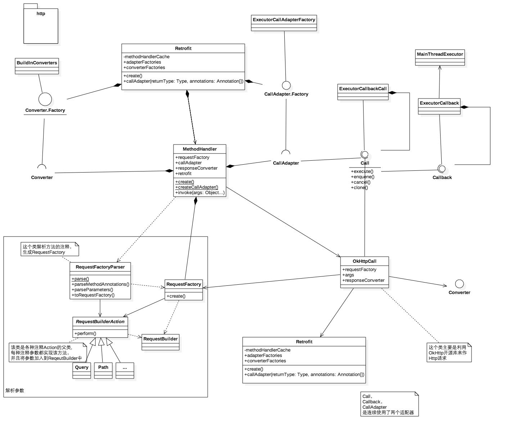
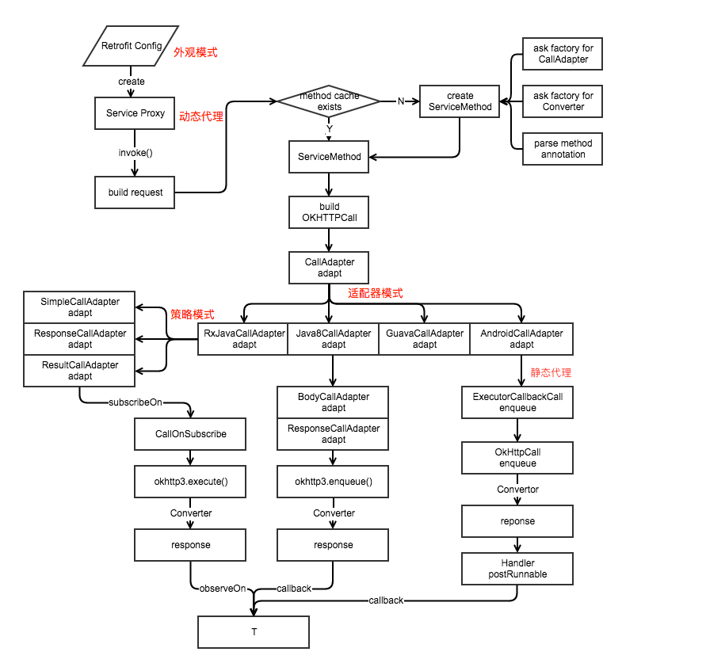

retrofit源码解析2
使用
首先定义一个接口
public interface GitHubService {
@GET("users/{user}/repos")
Call<List<Repo>> listRepos(@Path("user") String user);
}
构造Retrofit，实例化接口
Retrofit retrofit = new Retrofit.Builder()
.baseUrl("https://api.github.com/")
.build();
GitHubService service = retrofit.create(GitHubService.class);
Retrofit.Builder 是 Retrofit 对象的一个嵌套类，负责用来创建 Retrofit 实例对象，使用『建造者模式』的好处是清晰明了可定制化
执行
Call<List<Repo>> repos = service.listRepos("octocat");
构造出 repos可以同步执行，或者异步
关于 Query & QueryMap URL 配置 Part & PartMap 等可以参考官方文档
源码分析
create()
由入口 retrofit.create()开始分析
public <T> T create(final Class<T> service) {
//校验 service是否为注解
Utils.validateServiceInterface(service);
//如果将 validateEagerly 标识设置为 True，那么在我们调用 .eagerlyValidateMethods(service) 方法之前就提前验证并创建好啦。
if (validateEagerly) {
eagerlyValidateMethods(service);
}
return (T) Proxy.newProxyInstance(service.getClassLoader(), new Class<?>[] { service },
new InvocationHandler() {
//得到Platform，这里得到的是Android，主要作用是在主线程的 Looper 并构造了一个 主线程的 Handler，于是在 Android 平台，调用 Callback 时会将该请求 post 到主线程上去执行。
private final Platform platform = Platform.get();
@Override public Object invoke(Object proxy, Method method, Object... args)
throws Throwable {
// If the method is a method from Object then defer to normal invocation.
if (method.getDeclaringClass() == Object.class) {
return method.invoke(this, args);
}
//默认是 false，是定义在接口中有默认的实现，则返回 true
if (platform.isDefaultMethod(method)) {
return platform.invokeDefaultMethod(method, service, proxy, args);
}
//在这里构造了一个 call
return loadMethodHandler(method).invoke(args);
}
});
}
用到了 java 的动态代理，最终调用了 loadMethodHandler(method).invoke(args); 获得了一个call，默认为 OkHttpCall，之后可以用这个call 的enqueue、exctue等等来操作
build
继续看看 retrofit 的 build方法
public Retrofit build() {
if (baseUrl == null) {
throw new IllegalStateException("Base URL required.");
}
okhttp3.Call.Factory callFactory = this.callFactory;
if (callFactory == null) {
callFactory = new OkHttpClient();
}
// Make a defensive copy of the adapters and add the default Call adapter.
List<CallAdapter.Factory> adapterFactories = new ArrayList<>(this.adapterFactories);
adapterFactories.add(Platform.get().defaultCallAdapterFactory(callbackExecutor));
// Make a defensive copy of the converters.
List<Converter.Factory> converterFactories = new ArrayList<>(this.converterFactories);
return new Retrofit(callFactory, baseUrl, converterFactories, adapterFactories,
callbackExecutor, validateEagerly);
}
public Builder baseUrl(final HttpUrl baseUrl) {
checkNotNull(baseUrl, "baseUrl == null");
List<String> pathSegments = baseUrl.pathSegments();
if (!"".equals(pathSegments.get(pathSegments.size() - 1))) {
throw new IllegalArgumentException("baseUrl must end in /: " + baseUrl);
}
return baseUrl(new BaseUrl() {
@Override public HttpUrl url() {
return baseUrl;
}
});
}
/**
* Set an API base URL which can change over time.
*
* @see #baseUrl(HttpUrl)
*/
public Builder baseUrl(BaseUrl baseUrl) {
this.baseUrl = checkNotNull(baseUrl, "baseUrl == null");
return this;
}
/** Add converter factory for serialization and deserialization of objects. */
public Builder addConverterFactory(Converter.Factory factory) {
converterFactories.add(checkNotNull(factory, "factory == null"));
return this;
}
/**
* Add a call adapter factory for supporting service method return types other than {@link
* Call}.
*/
public Builder addCallAdapterFactory(CallAdapter.Factory factory) {
adapterFactories.add(checkNotNull(factory, "factory == null"));
return this;
}
/**
* The executor on which {@link Callback} methods are invoked when returning {@link Call} from
* your service method.
* <p>
* Note: {@code executor} is not used for {@linkplain #addCallAdapterFactory custom method
* return types}.
*/
public Builder callbackExecutor(Executor executor) {
this.callbackExecutor = checkNotNull(executor, "executor == null");
return this;
}
/**
* When calling {@link #create} on the resulting {@link Retrofit} instance, eagerly validate
* the configuration of all methods in the supplied interface.
*/
public Builder validateEagerly(boolean validateEagerly) {
this.validateEagerly = validateEagerly;
return this;
}
在使用Build模式时，将属性 baseUrl、adapterFactories、converterFactories等赋值。在build()时构造出retrofit实例返回
loadMethodHandler
MethodHandler loadMethodHandler(Method method) {
MethodHandler handler;
synchronized (methodHandlerCache) {
handler = methodHandlerCache.get(method);
if (handler == null) {
handler = MethodHandler.create(this, method);
methodHandlerCache.put(method, handler);
}
}
return handler;
}
解析对应的方法（接口方法），创建 MethodHandler 加入到 methodHandlerCache 中，返回得到 MethodHandler。如果缓存里有则在methodHandlerCache拿到MethodHandler，若没有，则通过MethodHandler.create(this, method)得到MethodHandler，并存入缓存
MethodHandler
正如之前所说在retrofit的creat方法中，最终调用的是 MethodHandler的invoke方法得到的一个 call
Object invoke(Object... args) {
return callAdapter.adapt(
new OkHttpCall<>(callFactory, requestFactory, args, responseConverter));
}
继续看看 MethodHandler 中其他的方法
//MethodHandler 的创建方法，在这个方法里面通过创建 CallAdapter，responseConverter，requestFactory，最后创建 MethodHandler。
static MethodHandler create(Retrofit retrofit, Method method) {
CallAdapter<?> callAdapter = createCallAdapter(method, retrofit);
Type responseType = callAdapter.responseType();
if (responseType == Response.class || responseType == okhttp3.Response.class) {
throw Utils.methodError(method, "'"
+ Types.getRawType(responseType).getName()
+ "' is not a valid response body type. Did you mean ResponseBody?");
}
Converter<ResponseBody, ?> responseConverter =
createResponseConverter(method, retrofit, responseType);
//注意这里，RequestFactoryParser.parse根据注解生成 `RequestFactory` RequestFactory requestFactory = RequestFactoryParser.parse(method, responseType, retrofit);
return new MethodHandler(retrofit.callFactory(), requestFactory, callAdapter,
responseConverter);
}
//通过 retrofit 的 newCallAdapter 创建 CallAdapter
private static CallAdapter<?> createCallAdapter(Method method, Retrofit retrofit) {
Type returnType = method.getGenericReturnType();
if (Utils.hasUnresolvableType(returnType)) {
throw Utils.methodError(method,
"Method return type must not include a type variable or wildcard: %s", returnType);
}
if (returnType == void.class) {
throw Utils.methodError(method, "Service methods cannot return void.");
}
Annotation[] annotations = method.getAnnotations();
try {
return retrofit.callAdapter(returnType, annotations);
} catch (RuntimeException e) { // Wide exception range because factories are user code.
throw Utils.methodError(e, method, "Unable to create call adapter for %s", returnType);
}
}
//过 retrofit 的 responseConverter 方法得到 responseConverter
private static Converter<ResponseBody, ?> createResponseConverter(Method method,
Retrofit retrofit, Type responseType) {
Annotation[] annotations = method.getAnnotations();
try {
return retrofit.responseBodyConverter(responseType, annotations);
} catch (RuntimeException e) { // Wide exception range because factories are user code.
throw Utils.methodError(e, method, "Unable to create converter for %s", responseType);
}
}
MethodHandler 是 retrofit 中连接了解析部分，执行部分，转换部分的一个关键的中间类。不过 MethodHandler 的代码量很少。它可以说是连接各个部分的桥梁，也是接口方法的描述类。它有包含了 retrofit，requestFactory，callAdapter，responseConverter 成员变量。主要方法如下
callAdapter.adapt
最终是通过 callAdapter.adapt得到一个 call 的，adapter 通过 adapt 把一种 call 适配成另一种 call供我们使用
ExecutorCallAdapterFactory
举例分析ExecutorCallAdapterFactory
在get方法时，得到 CallAdapter的实例
@Override
public CallAdapter<Call<?>> get(Type returnType, Annotation[] annotations, Retrofit retrofit) {
if (getRawType(returnType) != Call.class) {
return null;
}
final Type responseType = Utils.getCallResponseType(returnType);
return new CallAdapter<Call<?>>() {
@Override public Type responseType() {
return responseType;
}
@Override public <R> Call<R> adapt(Call<R> call) {
return new ExecutorCallbackCall<>(callbackExecutor, call);
}
};
}
注意 CallAdapt 的adapt 方法，这里构造了一个call,
return new ExecutorCallbackCall<>(callbackExecutor, call);
这里有两个参数，callbackExecutor ，call
callbackExecutor是platform传入的，目的是为了 callback 能运行在UI 线程，再回来看platform的代码
static class Android extends Platform {
@Override CallAdapter.Factory defaultCallAdapterFactory(Executor callbackExecutor) {
if (callbackExecutor == null) {
callbackExecutor = new MainThreadExecutor();
}
return new ExecutorCallAdapterFactory(callbackExecutor);
}
static class MainThreadExecutor implements Executor {
private final Handler handler = new Handler(Looper.getMainLooper());
@Override public void execute(Runnable r) {
handler.post(r);
}
}
}
这个结构体就是我们最后拿到的call，我们来看看他的结构
static final class ExecutorCallbackCall<T> implements Call<T> {
final Executor callbackExecutor;
final Call<T> delegate;
ExecutorCallbackCall(Executor callbackExecutor, Call<T> delegate) {
this.callbackExecutor = callbackExecutor;
this.delegate = delegate;
}
@Override public void enqueue(final Callback<T> callback) {
delegate.enqueue(new Callback<T>() {
@Override public void onResponse(final Call<T> call, final Response<T> response) {
callbackExecutor.execute(new Runnable() {
@Override public void run() {
if (delegate.isCanceled()) {
// Emulate OkHttp's behavior of throwing/delivering an IOException on cancelation
callback.onFailure(call, new IOException("Canceled"));
} else {
callback.onResponse(call, response);
}
}
});
}
@Override public void onFailure(final Call<T> call, final Throwable t) {
callbackExecutor.execute(new Runnable() {
@Override public void run() {
callback.onFailure(call, t);
}
});
}
});
}
@Override public boolean isExecuted() {
return delegate.isExecuted();
}
@Override public Response<T> execute() throws IOException {
return delegate.execute();
}
@Override public void cancel() {
delegate.cancel();
}
@Override public boolean isCanceled() {
return delegate.isCanceled();
}
@SuppressWarnings("CloneDoesntCallSuperClone") // Performing deep clone.
@Override public Call<T> clone() {
return new ExecutorCallbackCall<>(callbackExecutor, delegate.clone());
}
@Override public Request request() {
return delegate.request();
}
}
正如之前所分析的，在异步执行回调时 onResponse、onFailure，使用了Executor来执行，这样我们的回调就运行在了 UI 线程，我们甚至可以自定义Executor，运行在我们希望的线程
这里的 execute、request等方法都是静态代理模式，直接由构造时传入的call执行
那么 call 是哪里传入的？
再次回到 create中
Object invoke(Object... args) {
return callAdapter.adapt(
new OkHttpCall<>(callFactory, requestFactory, args, responseConverter));
}
可以看到最终执行这些方法的是 new OkHttpCall<>(callFactory, requestFactory, args, responseConverter)
OkHttpCall
OkHttpCall是call的一个实现，其中 wrapper 了okhttp3.Call，最终的网络请求是okhttp3去请求的，retrofit 本身没有对网络进行请求的操作
构造方法
OkHttpCall(okhttp3.Call.Factory callFactory, RequestFactory requestFactory, Object[] args,
Converter<ResponseBody, T> responseConverter) {
this.callFactory = callFactory;
this.requestFactory = requestFactory;
this.args = args;
this.responseConverter = responseConverter;
}
在构造时requestFactory，responseConverter都已经拿到了
举例分析 execute
@Override public Response<T> execute() throws IOException {
okhttp3.Call call;
synchronized (this) {
if (executed) throw new IllegalStateException("Already executed.");
executed = true;
if (creationFailure != null) {
if (creationFailure instanceof IOException) {
throw (IOException) creationFailure;
} else {
throw (RuntimeException) creationFailure;
}
}
call = rawCall;
if (call == null) {
try {
call = rawCall = createRawCall();
} catch (IOException | RuntimeException e) {
creationFailure = e;
throw e;
}
}
}
if (canceled) {
call.cancel();
}
return parseResponse(call.execute());
}
-------------
private okhttp3.Call createRawCall() throws IOException {
okhttp3.Call call = callFactory.newCall(requestFactory.create(args));
if (call == null) {
throw new NullPointerException("Call.Factory returned null.");
}
return call;
}
createRawCall得到了一个 okhttp 的 call， callFactory在retrofit build 时默认赋值为OkHttpClient，最好执行的是okhttp 的 call 的 excute
继续看执行 excute 后的解析
Response<T> parseResponse(okhttp3.Response rawResponse) throws IOException {
ResponseBody rawBody = rawResponse.body();
// Remove the body's source (the only stateful object) so we can pass the response along.
rawResponse = rawResponse.newBuilder()
.body(new NoContentResponseBody(rawBody.contentType(), rawBody.contentLength()))
.build();
int code = rawResponse.code();
if (code < 200 || code >= 300) {
try {
// Buffer the entire body to avoid future I/O.
ResponseBody bufferedBody = Utils.buffer(rawBody);
return Response.error(bufferedBody, rawResponse);
} finally {
rawBody.close();
}
}
if (code == 204 || code == 205) {
return Response.success(null, rawResponse);
}
ExceptionCatchingRequestBody catchingBody = new ExceptionCatchingRequestBody(rawBody);
try {
//这里完成了原始 Response 的解析，T 就是我们想要的结果,使用了responseConverter
T body = responseConverter.convert(catchingBody);
return Response.success(body, rawResponse);
} catch (RuntimeException e) {
// If the underlying source threw an exception, propagate that rather than indicating it was
// a runtime exception.
catchingBody.throwIfCaught();
throw e;
}
}
RxJavaCallAdapterFactory
看完了ExecutorCallAdapterFactory，继续看看另一种实现RxJavaCallAdapterFactory
关键代码
private CallAdapter<Observable<?>> getCallAdapter(Type returnType) {
Type observableType = getParameterUpperBound(0, (ParameterizedType) returnType);
Class<?> rawObservableType = getRawType(observableType);
if (rawObservableType == Response.class) {
if (!(observableType instanceof ParameterizedType)) {
throw new IllegalStateException("Response must be parameterized"
+ " as Response<Foo> or Response<? extends Foo>");
}
Type responseType = getParameterUpperBound(0, (ParameterizedType) observableType);
return new ResponseCallAdapter(responseType);
}
if (rawObservableType == Result.class) {
if (!(observableType instanceof ParameterizedType)) {
throw new IllegalStateException("Result must be parameterized"
+ " as Result<Foo> or Result<? extends Foo>");
}
Type responseType = getParameterUpperBound(0, (ParameterizedType) observableType);
return new ResultCallAdapter(responseType);
}
return new SimpleCallAdapter(observableType);
}
根据返回的类型选择不同的CallAdapter,选取SimpleCallAdapter领看看
static final class SimpleCallAdapter implements CallAdapter<Observable<?>> {
private final Type responseType;
SimpleCallAdapter(Type responseType) {
this.responseType = responseType;
}
@Override public Type responseType() {
return responseType;
}
@Override public <R> Observable<R> adapt(Call<R> call) {
return Observable.create(new CallOnSubscribe<>(call)) //
.flatMap(new Func1<Response<R>, Observable<R>>() {
@Override public Observable<R> call(Response<R> response) {
if (response.isSuccess()) {
return Observable.just(response.body());
}
return Observable.error(new HttpException(response));
}
});
}
}
通过一个 flatMap，将 response 中的结构发送出去。，。。最终返回的是一个Observable类型
最好来张图总结下
图片出自 https://github.com/android-cn/android-open-project-analysis/tree/master/tool-lib/network/retrofit

参考
http://blog.qiji.tech/archives/9546
http://www.jianshu.com/p/07dac989272c
https://mp.weixin.qq.com/s?__biz=MzA3NTYzODYzMg==&mid=2653577186&idx=1&sn=1a5f6369faeb22b4b68ea39f25020d28&scene=0&key=f5c31ae61525f82eff1e94d54c4abd1c47958e9f7fe5751f2d201958841a354f0423e4ce98cb895058808f330921bde6&ascene=0&uin=MTYzMjY2MTE1&devicetype=iMac+MacBookPro10%2C1+OSX+OSX+10.11.4+build(15E65)&version=11020201&pass_ticket=rsJxex9Bn1eN7iJgW6FUI2KG3V9O6e3TH42j1U%2Fy5SU%3D
https://github.com/android-cn/android-open-project-analysis/tree/master/tool-lib/network/retrofit
http://www.tuicool.com/articles/UryUnyF
http://www.jianshu.com/p/c1a3a881a144